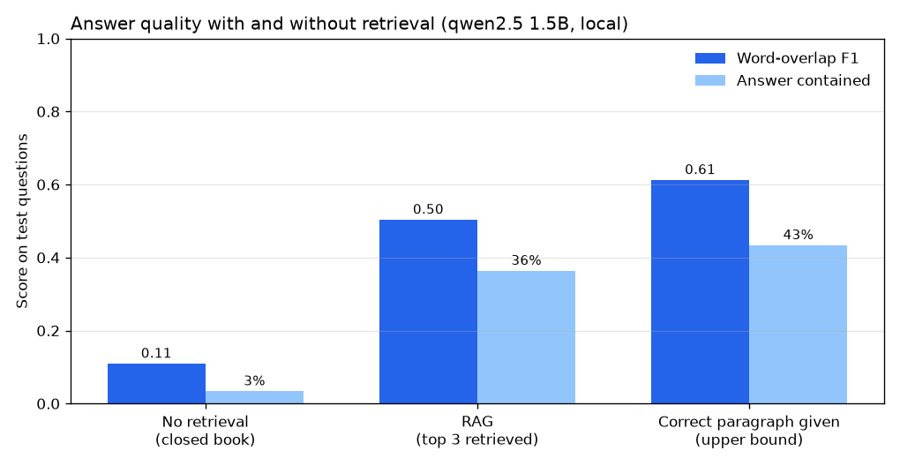

Arabic RAG Assistant
You ask something in Arabic, it digs through Wikipedia paragraphs, and a small model on my laptop writes the answer with sources. I thought the model would be the weak part. It wasn't, the search was, so that's where most of my time went.
0questions with the right paragraph in the top 3
0answer F1, without vs with retrieval